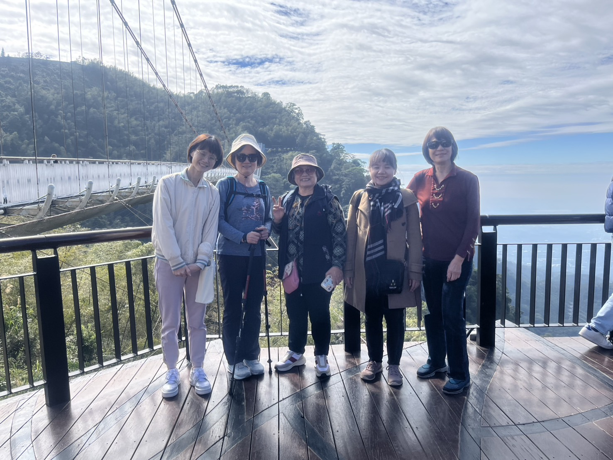
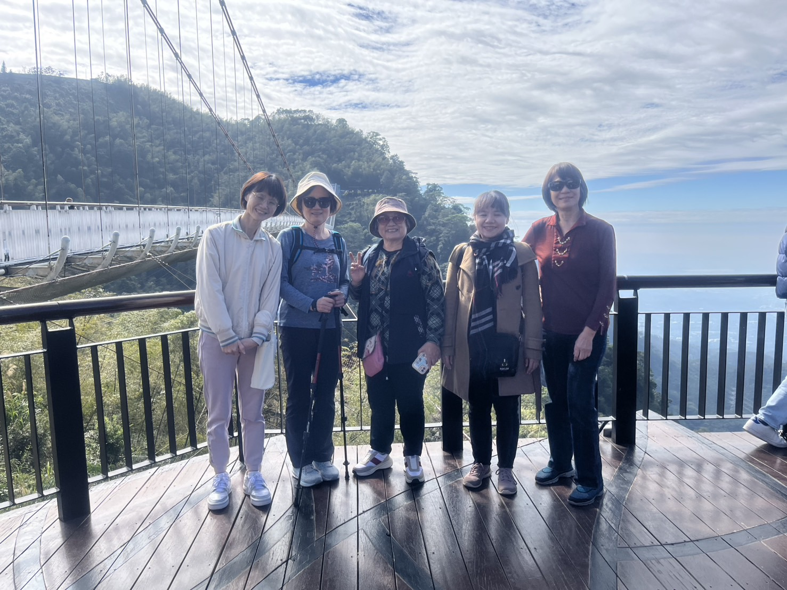
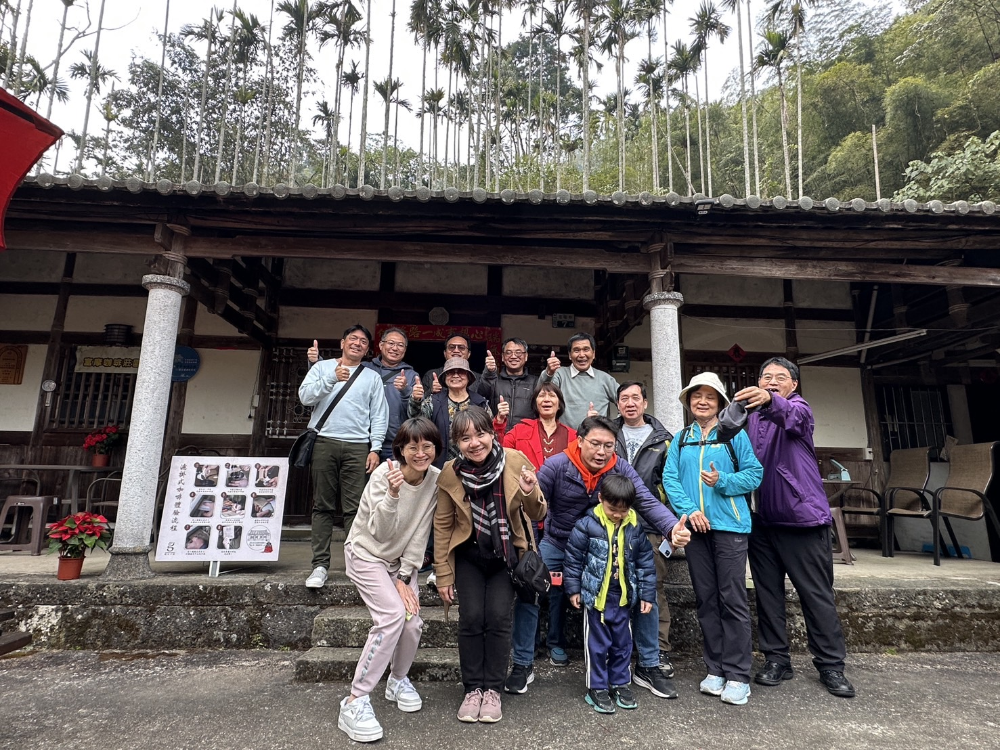
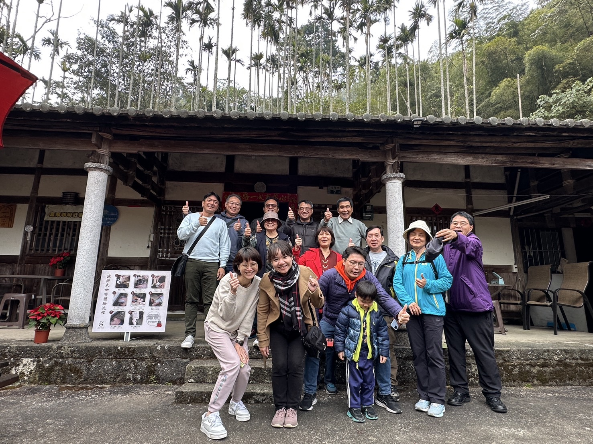
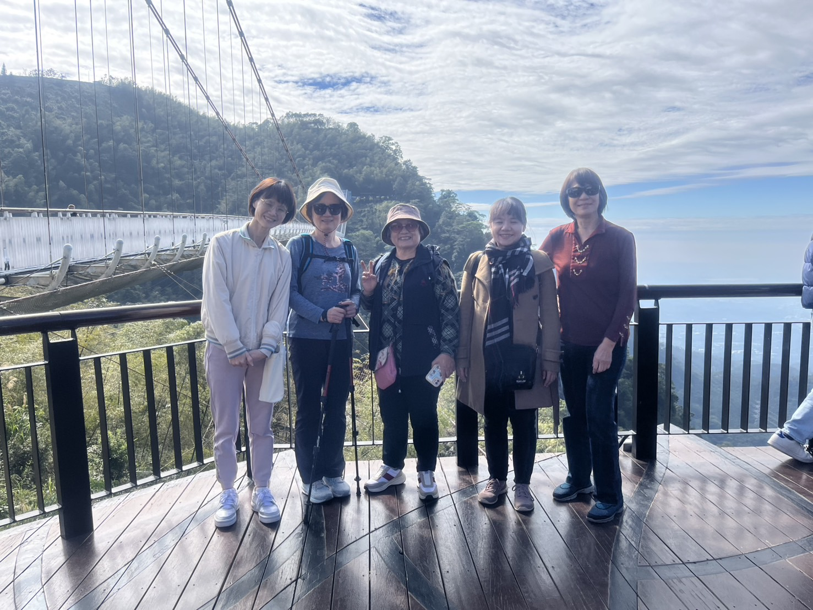
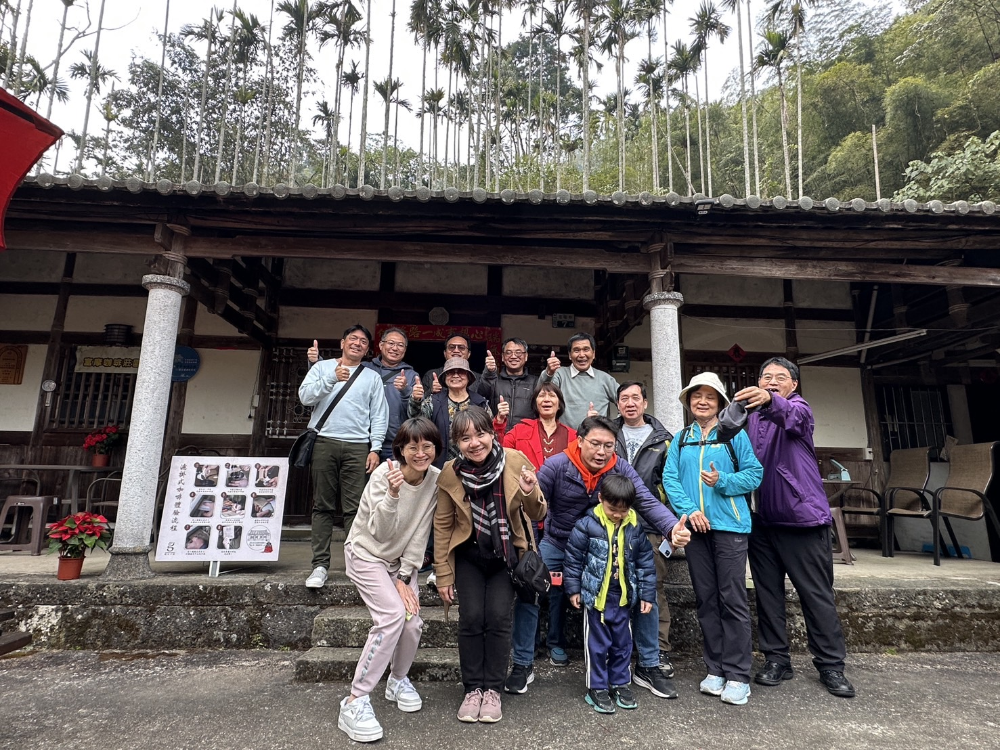

活動簡介
114年1月14日(二)，教師會舉辦了以健康樂活為主題的「嘉義太平老街一日遊」。在這次活動中，教師們享受了自然景觀與文化體驗，留下了滿滿的回憶！
行程安排
9:00 中山醫後門出發，前往太平雲梯停車場
10:30 太平雲梯遊客服務中心集合，購票後遊覽雲之南步道
12:00 自行用餐於太平老街
14:00 富摩咖啡莊園，咖啡DIY體驗
16:00 活動結束，返回出發地
活動亮點
 

 


114年1月14日(二)，教師會舉辦了以健康樂活為主題的「嘉義太平老街一日遊」。在這次活動中，教師們享受了自然景觀與文化體驗，留下了滿滿的回憶！
9:00 中山醫後門出發，前往太平雲梯停車場
10:30 太平雲梯遊客服務中心集合，購票後遊覽雲之南步道
12:00 自行用餐於太平老街
14:00 富摩咖啡莊園，咖啡DIY體驗
16:00 活動結束，返回出發地

